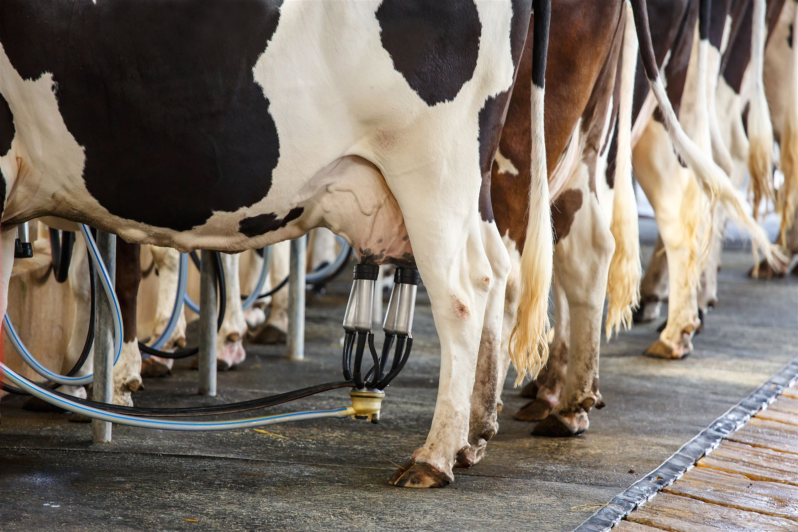
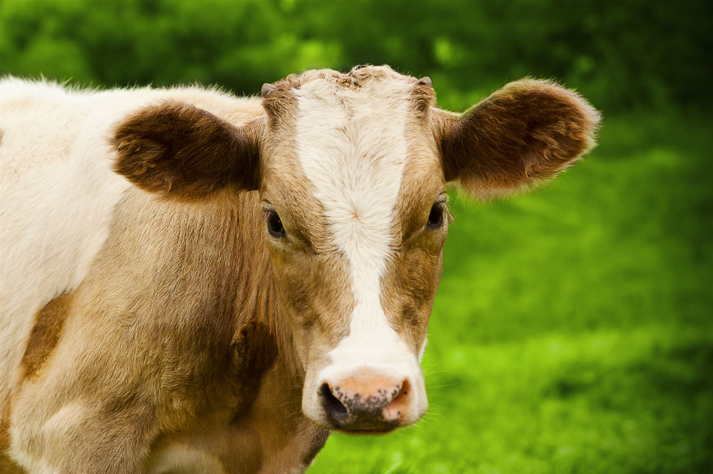
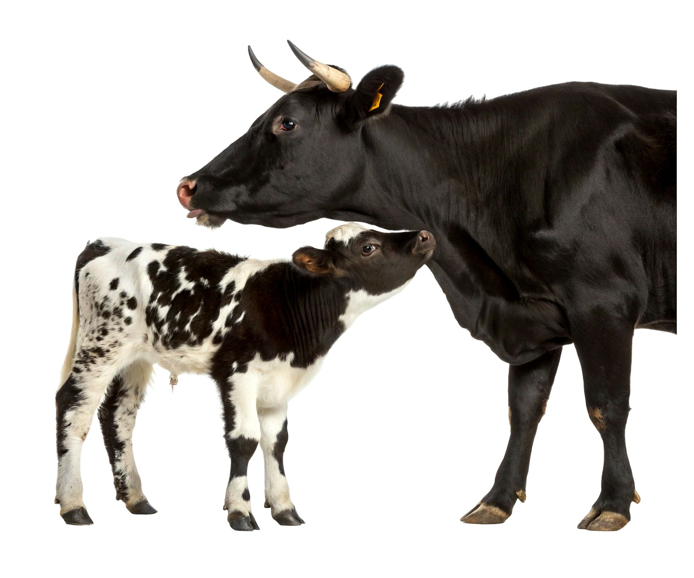
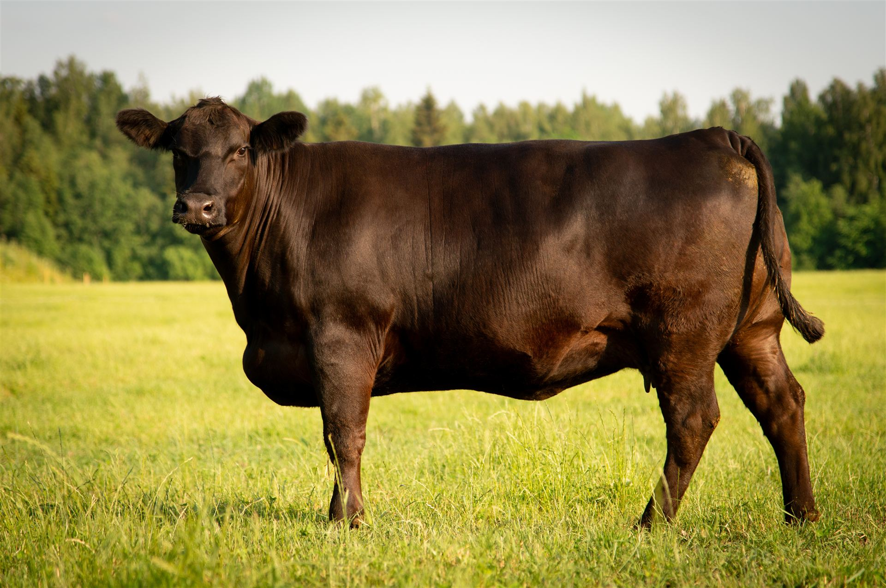
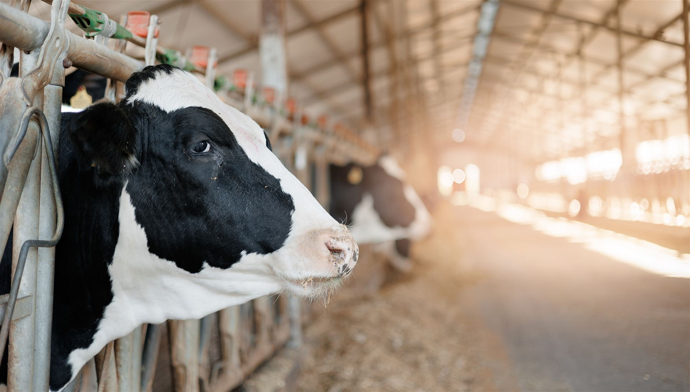
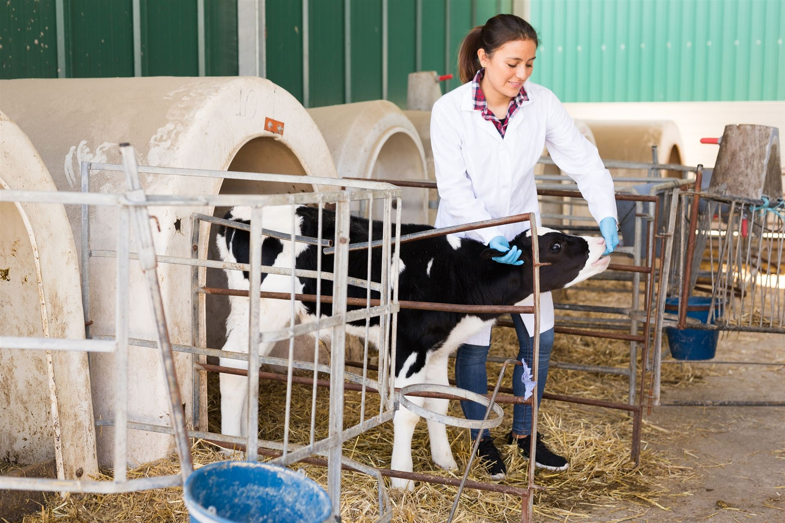

Программа кормления · КРС
От телёнка до сухостоя. БВМКК-1-к и БВМКК-2-к для выращивания ремонтного молодняка, БВМКК-61-1С-к для высокопродуктивных коров — в лактацию и в сухостойный период.

Продуктивность коровы закладывается в первые месяцы жизни. Нетели и коровы с хорошим рубцом используют питательные вещества корма эффективнее, что ведёт к большим надоям. Полноценное кормление молодняка — основа выращивания ремонтных тёлок.
Дальше корова живёт в двух чередующихся режимах. В лактацию рацион работает на продуктивность. В сухостой — на то, чтобы следующая лактация вообще состоялась.
Цикл кормления · четыре этапа
Цикл замкнут: после сухостоя корова возвращается в лактацию
Как это покупается
Если белковое сырьё у вас своё. Концентрат работает как минерально-витаминная, аминокислотная и ферментная часть рациона. Шрот подсолнечный или жмых рапсовый вы ставите сами: 15 % на доращивании, 20 % в лактацию и 10 % в сухостой.
Если белок закрываем мы. Исполнение с вводом 20 % уже содержит белковую часть. В хозяйстве остаётся только зерновая группа — 80 % рациона, отдельная закупка шрота не требуется.
Линейка программы




Вопрос по стаду
Расскажите про надой, структуру рациона и текущую схему кормления. Технолог скажет, что считать первым и где сейчас теряются деньги.

Частые вопросы по дойному стаду